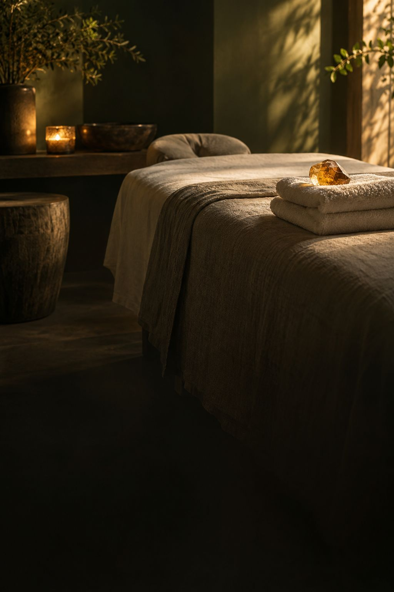

イメージ
PROGRAM
食いしばり特化プログラム
回数を重ねて、少しずつ。
長年の食いしばり癖と、それにともなう顔や首・肩のこわばりに向き合う、通って続けるプログラム。口コミには、3回目、5回目と重ねるうちに変化を感じた、という声が複数あります。
- 回数の目安
- 実際の内容に差し替えます
- 時間
- 実際の内容に差し替えます
- 料金
- 実際の金額に差し替えます

Relaxation Salon ／ 千葉市稲毛区 轟町
話をじっくり聞いて、
顎・首・肩のこわばりをほどく。
口コミに並ぶのは 話をじっくり聞いてくれる
毎回、暮らしのアドバイスをくれる
一緒に続けてくれる
という言葉。千葉市稲毛区・轟町の落ち着いたお部屋で、顎・顔・首・肩のこわばりに向き合うサロンです。
口コミに書かれていた、通いはじめたきっかけ
RELEASE ／ ほどけていく順番
その日のつらさ、暮らしのこと。毎回のカウンセリングで聞いてから、状態に合った施術を決めます。
食いしばり特化プログラムでは、顎や顔まわり、首から肩までのこわばりに向き合います。
施術のあと、顎や頭の重さがすっきりした、首から肩の力が抜けた、という声が届いています。
日々の中でできることを毎回アドバイス。回数を重ねながら、一緒に根本から見直していきます。
※口コミから見えた流れのイメージです。実際の施術の内容に差し替えます。感じ方には個人差があります。
Quiet room
マッサージの途中で、思わず眠ってしまうほど。
そんな声も届いています。
Voices
Googleの口コミ（★5）の要旨をもとにしたイメージです
★★★★★食いしばり特化プログラム・5回
フェイスラインがすっきりして、家族にも気づかれた。長年の肩の硬さも、少しずつ楽に。後回しにしてきた自分に、もう一度向き合えた。
★★★★★食いしばり特化プログラム
毎回その時の悩みを聞いて、暮らしの中でできることを教えてくれる。その場だけで終わらせない姿勢に、安心して任せられる。
★★★★★食いしばり特化プログラム・3回目
回を重ねるごとに顔のコリがほぐれていく。首から肩の緊張が抜けて、首元まですっきりした。
★★★★★極上リセットコース・はじめて
よもぎ蒸しで体の芯まで温まり、マッサージは眠ってしまうほど。終わったあとは肌までつるつるに。
※口コミの本文ではなく、要旨を言い換えたものです。感じ方には個人差があります。
Visit
営業日・時間はGoogleマップの情報（2026年9月）
祝日・臨時のお休みは 実際の内容に差し替えます
Q&A
毎回のカウンセリングで、悩みや体の状態をじっくり聞いてから施術を決めます。口コミには、はじめての来店で極上リセットコースを選んだ方もいます。
口コミには、3回目・5回目と続けている方がいます。回数と間隔の目安を、実際の内容に合わせて書きます。
予約方法は実際の内容に差し替えます（このサンプルでは Instagram の DM につないでいます）。
メニューごとの料金と、使える支払い方法を書きます。
着替えの有無や持ち物を、実際の内容に合わせて書きます。
体のこと、通い方のこと。気になることを、まずはメッセージで。
予約方法は実際の内容に差し替えます